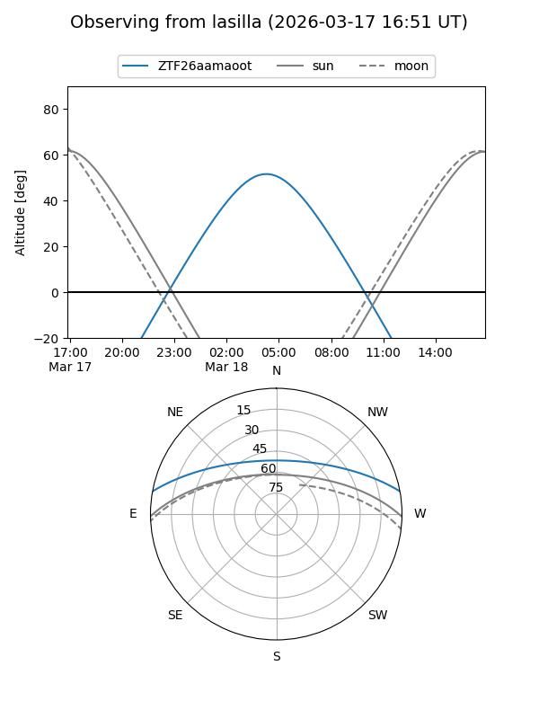
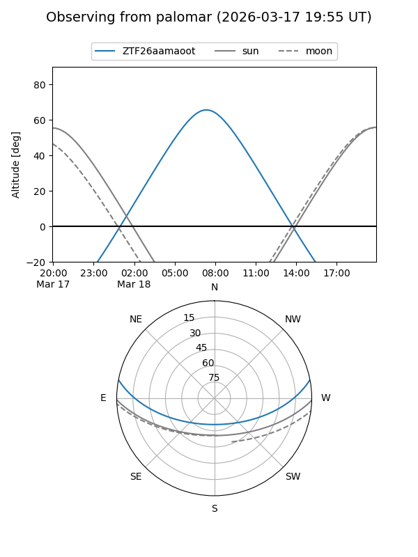

ZTF26aamaoot
Target ZTF26aamaoot at 2026-03-18 11:48
Aliases and brokers:
FINK: link
Lasair: link
ALeRCE: link
alt names
ZTF26aamaoot (ztf,fink_ztf)
Coordinates:
equatorial (ra, dec) = 168.9013,+9.23091
equatorial (HMS+DMS) = 11:15:36.31,+09:13:51.27
galactic (l, b) = (246.7532,+61.15431)
Flags:
Photometry:
last ztfg=17.63, ztfr=17.12
1 ztfg, 1 ztfr detections
Lightcurve
Visibility


Additional plots